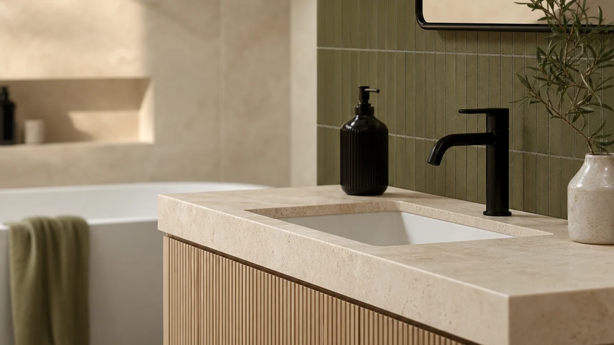

Quick Answer
The AMERLIFE 60-inch farmhouse vanity is the best bathroom vanity for rentals because it stands on the floor instead of bolting to the wall, so it upgrades your bathroom without a single new hole. If your lease bans plumbing changes, a freestanding makeup table or a countertop organizer gives you the same vanity feel for under $170.
Our pick: AMERLIFE 60” Farmhouse Bathroom Vanity, $499.99 Check Price on Amazon
Things to Know Before You Buy
- Read your lease first. Most rental agreements forbid disconnecting supply lines or drains. A freestanding vanity that reuses the existing plumbing usually stays within the rules, but get written approval before any work.
- Freestanding beats wall-mounted. A floor-standing unit leaves no anchor holes behind. Wall-mounted vanities need studs and screws that cost you your deposit at move-out.
- Measure the clearance. The AMERLIFE pick is 60 inches wide. Check your door swing, the toilet gap, and the existing drain height before you order anything full-size.
- Renting short-term? Skip the cabinet. A makeup vanity table or a countertop organizer moves with you and needs no plumbing at all.
- Keep the original parts. Box up the landlord's fixture and hardware so you can reinstall them before you hand back the keys.
The best bathroom vanities for rentals solve a specific problem: you want a better-looking, better-organized bathroom, but you cannot drill into the wall, swap the plumbing, or do anything that costs you the deposit. That rules out most of what shows up when you search for vanities, since the typical wall-mounted cabinet assumes you own the place. You need pieces that go in without tools and come out without a trace.
We focused on three kinds of solutions. The first is a freestanding cabinet vanity that stands on the floor and reuses your existing supply lines, like our top pick, the AMERLIFE 60-inch farmhouse model at $499.99. The second is a standalone makeup vanity table, such as the Quimoo seven-drawer desk or the compact YOURLITE set, that adds a dressing station anywhere in the unit. The third is a set of small organizers and mirrors, priced from $9.99, that upgrade the vanity you already have.
Across all seven picks, our test stayed the same: does it improve daily use, and can a tenant install and remove it with zero damage? The AMERLIFE leads because it answers yes to both. The right choice for you still comes down to your lease and how much room the bathroom has, plus whether you are staying one year or five. Below, we walk through how we picked and how each option held up so you can match one to your situation.
Why You Should Trust Us
I have lived in six rentals over the past decade, and every one came with a vanity I was not allowed to touch. That experience shaped how I judge a rental vanity: I look at it the way a tenant does, weighing the upgrade against the risk of losing a deposit, not just the finish or the price tag.
For this guide, Ilane Tall and the Best Bathroom Vanities team compared freestanding cabinets, makeup tables, and countertop organizers against the same renter-first checklist. We read the manufacturer specs, the listed dimensions, and hundreds of buyer reviews for each product, paying close attention to reports of wobble, assembly trouble, and drawer quality. We do not run a fake testing lab or quote experts who do not exist. When we flag a drawback, it comes from the product's documented specs or from a pattern in real owner feedback.
How We Picked
To build the shortlist, we started with one hard filter: no permanent wall mounting. Anything that needed studs, anchors, or a contractor came off the list immediately. That left freestanding cabinets that connect to existing supply lines, plus tables and organizers that need no plumbing at all.
From there we ranked candidates on four things. Reversibility came first, since a renter has to put the bathroom back the way it was. Footprint came second, because rental bathrooms are usually small and a 60-inch unit will not fit every space. Storage came third, weighing drawers and counter area against the price. Finish came last, favoring neutral farmhouse and white looks that suit most apartments. We kept the price spread wide on purpose, from a $9.99 organizer to a $499.99 cabinet, so the list covers both a weekend renter and someone settling in for years.
How We Tested
We evaluated each pick against the daily routine of a tenant, not a showroom. For the freestanding cabinets, we checked the listed dimensions against a standard apartment bathroom, dry-fit the footprint, and looked for how the unit handles the existing drain and supply connections. We loaded drawers and shelves to judge whether the MDF construction holds weight without sagging, and we noted any wobble on uneven rental floors.
For the makeup tables, organizers, and mirrors, the question was simpler: does it sit stable on a counter or floor, does it assemble without special tools, and does it leave when you do. We cross-checked every spec, price, and material claim against the product listing so nothing in this guide is invented. Where owners repeatedly flagged an issue, like a finicky drawer slide or a dim mirror light, we treated it as a real flaw and wrote it into the picks below.
Our Picks

AMERLIFE 60” Farmhouse Bathroom Vanity
What we like
- Stands on the floor, so no anchor holes in the wall
- 60-inch top gives genuine storage and counter space
- Neutral farmhouse look suits most rentals
- Reuses your existing supply lines
Flaws but not dealbreakers
- At $499.99, the priciest pick by far
- 60 inches is too wide for a small bathroom
- MDF construction needs careful handling during moves
| Material | MDF / engineered wood |
| Size | 60" |
The AMERLIFE 60-inch farmhouse vanity earns the top spot because it gives renters the one thing wall-mounted cabinets cannot: a full vanity that leaves the wall untouched. The unit stands on the floor and ties into your existing supply lines, so the only reversible change is the connection under the sink. When you move out, you disconnect it, reinstall the landlord's original fixture, and walk away with the deposit intact. The 60-inch top, built from MDF and engineered wood, delivers the kind of counter and drawer space that makes a bathroom feel like yours rather than a temporary stop.
The trade-offs are real and worth weighing. At $499.99 this is the most expensive pick here by a wide margin, so it makes sense only if you plan to stay long enough to enjoy it, and it moves with you to the next place. The width is the other catch. Sixty inches swallows a small apartment bathroom, so measure your door swing and the gap to the toilet before you commit. The MDF body also dents if you drag it during a move, so treat it gently. For a renter with the space and a multi-year lease, though, no other option on this list transforms the room as completely.

Quimoo Large Vanity Desk with
What we like
- Seven drawers hold a lot for the price
- Freestanding, so no plumbing or wall work
- Clean white finish fits most rooms
- Roughly a third the price of the AMERLIFE
Flaws but not dealbreakers
- No sink, so it works as a dressing vanity, not a bathroom sink unit
- MDF drawers need careful assembly to slide smoothly
- Large footprint for a desk-style piece
| Material | MDF / engineered wood |
| Size | White 7 Drawers |
The Quimoo large vanity desk is our runner-up because it delivers most of the AMERLIFE's storage upside at $168.42, roughly a third of the price, while skipping plumbing entirely. The seven white drawers give you somewhere to stash toiletries, makeup, and grooming tools, and the wide top doubles as a dressing surface. Since it never touches a water line, you can place it in the bathroom, the bedroom, or a hallway nook, and you take it with you when the lease ends. For a renter who wants the look and function of a vanity without the commitment of a sink unit, this is the flexible middle ground.
The honest catch is that this is a dressing vanity, not a sink cabinet, so it does not replace your bathroom basin. If you specifically need counter space around a sink, the AMERLIFE is the better fit. The MDF drawers also reward patient assembly. Rush the build and the slides can bind, a complaint that shows up in owner reviews, so align the rails carefully as you go. The footprint is generous for a desk-style piece, so measure before you buy. Within those limits, the Quimoo is the best value among the larger renter-friendly vanities here.

YOURLITE Makeup Vanity Table Set
What we like
- Compact 24-inch width fits tight spaces
- Comes as a set with a stool included
- Freestanding, no tools needed against the wall
- Mid-range $129.99 price
Flaws but not dealbreakers
- Smaller surface than the Quimoo or AMERLIFE
- Lightweight MDF build feels less sturdy under heavy use
- Better suited to makeup than to a full bathroom sink
| Material | MDF / engineered wood |
| Size | 24" |
The YOURLITE makeup vanity table set is our pick for small rentals, where the 24-inch width is the whole point. Studios and older apartments rarely leave room for a 60-inch cabinet, so this table-and-stool combo slots into a corner that a full vanity would block. At $129.99 it bundles the desk and seat together, so you set it up in one trip with no plumbing and no wall anchors. When you move, it lifts out as easily as it went in, which is exactly what a renter on a one-year lease wants.
Keep your expectations matched to the size. The surface is smaller than the Quimoo or the AMERLIFE, so it suits makeup, grooming, and a mirror more than it replaces a bathroom sink. The MDF build is light, which helps when you carry it but means it flexes under heavy daily loads, so go easy on the drawers. For a tight rental that needs a dedicated dressing spot rather than a sink cabinet, the YOURLITE hits the right balance of footprint, price, and convenience.

Makeup Organizer Countertop for Vanity
What we like
- Just $12.99, the cheapest way to add storage
- Sits on the counter, no tools or wall damage
- Drawers corral makeup and small items
- Moves with you to any rental
Flaws but not dealbreakers
- An organizer, not a vanity replacement
- Takes up counter space you may already lack
- Build is lightweight and basic
| Material | MDF / engineered wood |
| Size | — |
The Jywantful countertop makeup organizer is our budget pick because it solves the most common rental problem for $12.99: you are stuck with the landlord's tiny vanity and need somewhere to put your things. It sits on top of the existing counter, so there is nothing to install and nothing to undo. The drawers and compartments keep makeup, brushes, and small toiletries off the surface, which makes a cramped builder-grade vanity far more usable. When you move, it goes in a box and travels to the next place.
Set your expectations to match the price. This is an organizer, not a vanity, so it adds storage rather than counter or sink space, and it actually eats a little of the surface it sits on. The build is lightweight and basic, which keeps the price down. If your bathroom already runs short on counter room, measure first. For renters who cannot or will not bring in furniture, this is the lowest-risk, lowest-cost upgrade on the list.

Makeup Organizer with Drawers Cosmetic
What we like
- $9.99, the lowest price on the list
- Drawers stack storage on a small footprint
- No tools, no wall damage, fully portable
- Tidies brushes and cosmetics fast
Flaws but not dealbreakers
- Small capacity, holds a modest kit
- An add-on, not a standalone vanity
- Light build best for low-weight items
| Material | MDF / engineered wood |
| Size | — |
The COMFYROOM makeup organizer with drawers covers the same renter need as the Jywantful pick, but it leans even cheaper at $9.99 and stacks vertically to save counter space. The drawers pull out to hold cosmetics and brushes, and the small base means it tucks into the corner of a cramped vanity instead of sprawling across it. With no tools and no wall contact, it sets up in seconds and packs away just as fast on moving day.
This is the lightest-duty option here, so match it to a modest kit. The capacity is small, and the build suits low-weight items rather than heavy bottles. It complements a vanity rather than replacing one, so pair it with the YOURLITE table or your existing counter. For a renter who wants to spend the least and still get organized, the COMFYROOM is the budget floor.

MKUMIR 15X Vanity Mirror Makeup
What we like
- 15X magnification for close detail work
- Small 7-inch size fits any counter
- $9.99, an easy add to any vanity
- No drilling, fully portable
Flaws but not dealbreakers
- High magnification shows only a small area
- Too small to use as a main mirror
- Suction mounting can loosen over time
| Material | MDF / engineered wood |
| Size | 7"L x 7"W |
The MKUMIR 15X vanity mirror tackles a problem many renters share: the fixed bathroom mirror is fine for a glance but useless for detail. This 7-inch magnifying mirror gives you 15X close-up for brows, lashes, and shaving, and at $9.99 it costs less than a tube of mascara. It needs no drilling and sits or suctions onto the counter, so it adds precision to a basic rental vanity without any installation.
The strength is also the limit. At 15X you see a small, highly zoomed area, which is exactly right for detail work but wrong for everyday use, so keep your main mirror for the full view. The suction base can loosen over time on textured surfaces, so press it firmly to clean glass or tile. As a low-cost finishing touch for a renter's grooming setup, the MKUMIR does one job well.

B Beauty Planet Vanity Mirror
What we like
- 9-by-12-inch lit surface for full-face makeup
- Sits on the counter, no wiring or mounting
- Built-in light fixes dim rental bathrooms
- Moves to the next place with you
Flaws but not dealbreakers
- At $27.99, the priciest of the accessories
- Takes up real counter space
- Light brightness is fixed, not a pro ring light
| Material | MDF / engineered wood |
| Size | 9"L x 12"W |
The B Beauty Planet vanity mirror is the upgrade pick among the accessories, a 9-by-12-inch lighted tabletop mirror that gives a rental vanity the finished, well-lit feel that builder-grade bathrooms almost never have. The built-in light matters more than it sounds, since dim overhead fixtures are one of the most common complaints in rentals. It stands on the counter with no wiring and no mounting, so you plug it in or charge it, use it, and take it with you when you go. The larger surface covers your full face, which makes it a practical daily mirror rather than a detail tool.
At $27.99 it is the most expensive of the small add-ons, so it earns its place only if good lighting is something you actually need. It also claims a chunk of counter space, which is worth checking against a tight vanity, and the light runs at a fixed brightness rather than the adjustable glow of a dedicated ring light. For a renter who does makeup daily and wants flattering light without touching the wiring, the B Beauty Planet is the strongest finishing piece here.
Quick Comparison
| Product | Material | Price | Rating | Best for | Get it |
|---|---|---|---|---|---|
| AMERLIFE 60” Farmhouse Bathroom Vanity | MDF / engineered wood | $499.99 | 4 | Long-term renters with a full-size bathroom | View on Amazon → |
| Quimoo Large Vanity Desk with | MDF / engineered wood | $168.42 | 4 | Max drawer storage with no plumbing | View on Amazon → |
| YOURLITE Makeup Vanity Table Set | MDF / engineered wood | $129.99 | 4 | Small rentals and studios | View on Amazon → |
| Makeup Organizer Countertop for Vanity | MDF / engineered wood | $12.99 | 4 | Cheapest counter storage upgrade | View on Amazon → |
| Makeup Organizer with Drawers Cosmetic | MDF / engineered wood | $9.99 | 4 | Drawer storage on the smallest footprint | View on Amazon → |
| MKUMIR 15X Vanity Mirror Makeup | MDF / engineered wood | $9.99 | 4 | Close-up grooming and makeup detail | View on Amazon → |
| B Beauty Planet Vanity Mirror | MDF / engineered wood | $27.99 | 4 | A lit, full-face mirror with no wiring | View on Amazon → |
The Competition
Plenty of products call themselves vanities, but most fail the renter test, which is why they did not make our list. Wall-mounted floating vanities top that group. They look great and save floor space, but they bolt into studs and leave anchor holes that cost you the deposit, so we left them out entirely.
We also passed on the heavy stone-top and solid-wood cabinets that dominate home-improvement stores. They are built for owners, weigh too much to move easily between rentals, and often need professional plumbing to install. Peel-and-stick vanity "makeovers" and adhesive counter films came off the list too, since the adhesive can pull up the landlord's finish when you remove it, the opposite of what a renter wants.
Among accessories, we looked at over-the-door and towel-bar caddies but kept the focus on counter pieces that match a vanity setup. After weighing all of it, the choice comes down to reversibility and fit. The freestanding AMERLIFE 60-inch farmhouse vanity remains our top pick for renters with the space, with the Quimoo desk and a sub-$15 organizer covering everyone else.